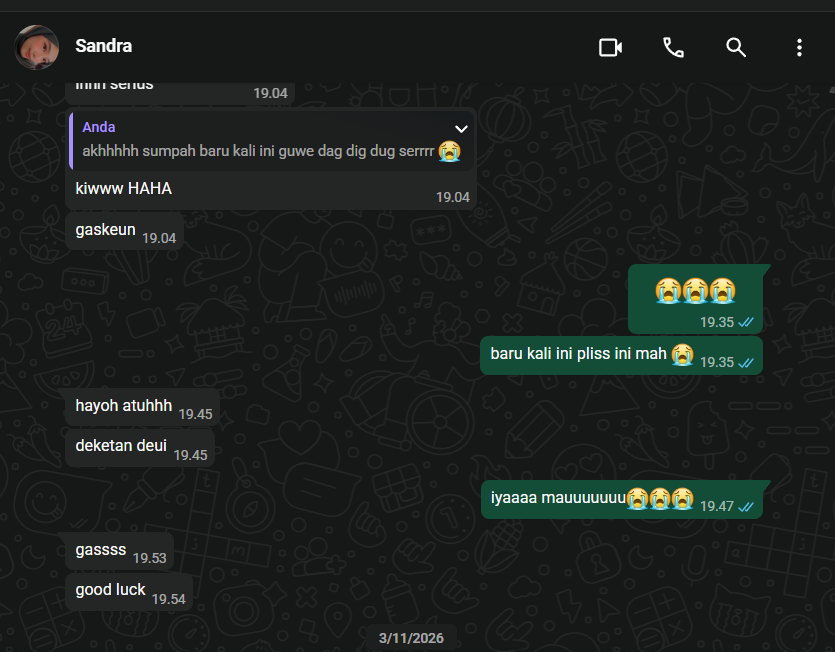
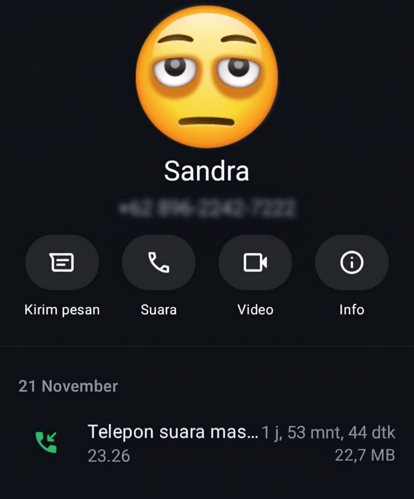

note
Bukan sekadar basa-basi lewat chat. Aku bikin halaman kecil ini biar kamu tahu alasan jujur di balik kenapa aku always happy setiap kali ada waktu bareng kamu. seriously, ini first time aku bikin sesuatu kayak niat bngt jir wkwk
"there is no logic in life, but love is understandable"
Roblox in real life (Ini lucu bngt siii sumpahhhh wkwk)
Dari awal kenal sampai jalan bareng kemarin, aku ngerasa obrolan sama kamu ngalir natural. Kamu nggak pernah berusaha jadi orang lain, dan cara kamu ngerespons hal-hal kecil bikin suasana selalu terasa hangat dan tenang.
Ini moment yang paling aku ingettt T-T (rainbow slide)
Di tengah kesibukan masing-masing—kamu dengan rutinitas kerja dan aku dengan target akhir kuliahku—kamu selalu jadi tempat istirahat pikiran yang paling nyaman. walopun chat kita nggak tiap hari, tapi aku cukup nyaman pas lagi chat bareng sama kamu apalagi pas lagi jalan bareng :), it's like i can be myself without any pressure
Ini potongan obrolanku sama temanku waktu ngebahas tentang kamu. Aku cuma pengen kamu tahu kalau rasa kagumku ke kamu itu nyata.

Ini waktu aku cerita ke temen aku tentang momen-momen bareng kamu. trs nanyain gimana baiknya karna dia lebih berpengalaman setauku soal hubungan.

Ampee hampir 2 jam bahas kamu wkwk, tapi aku seneng banget karna temen aku bilang kalau aku harus serius sama perasaan ini. dia juga bilang kalau aku harus jujur sama kamu soal perasaan ini, karna mungkin aja kamu ngerasa hal yang sama, trs temenku bilang cewe tuh harus di kasih kepastian katanya T_T.
Satu Langkah Terakhir
Tap terus... (0 / 10)
Dari Aku, Untuk Kamu
Aku nggak mau buru-buru atau bikin kamu ngerasa tertekan. Aku bikin ini cuma supaya kamu tahu isi hatiku yang sebenarnya. Setelah kamu baca ini, kamu boleh cerita langsung apa yang kamu rasain sekarang.
Sekarang giliran aku dengerin jawaban kamu secara langsung :)